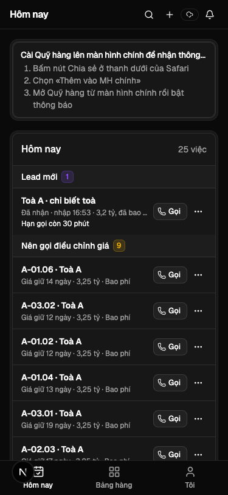
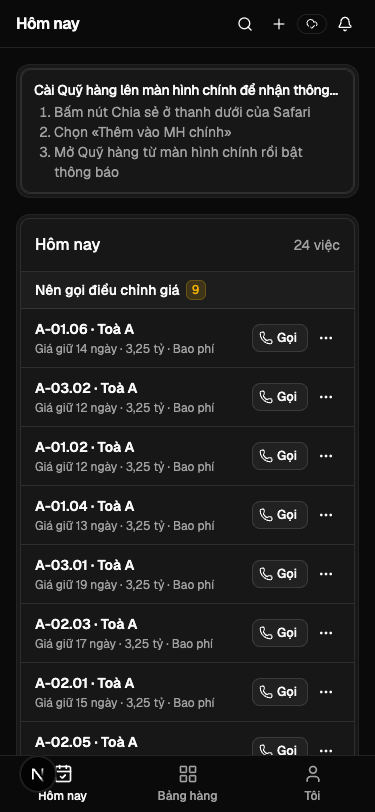
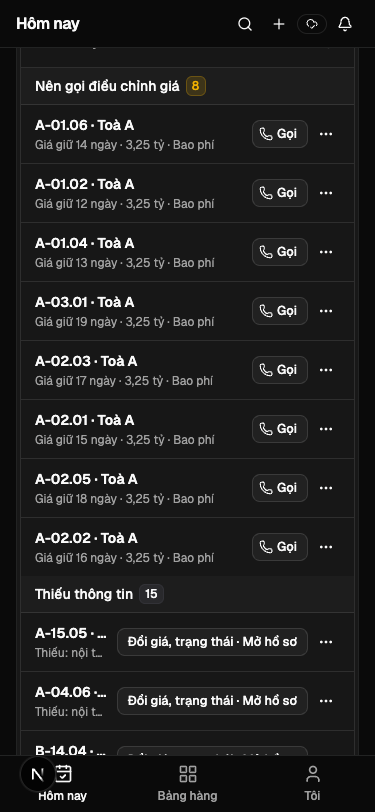
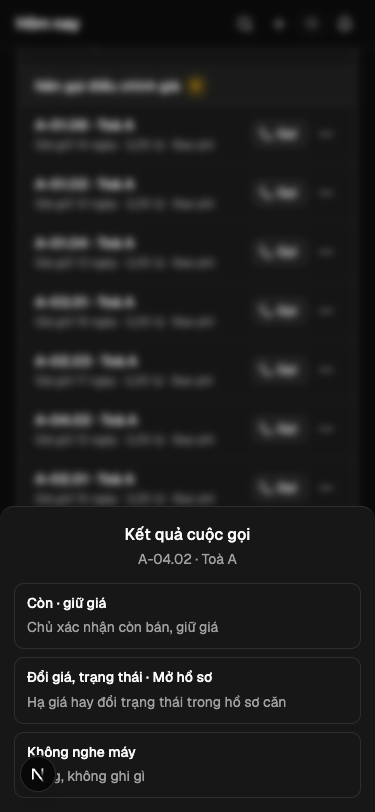
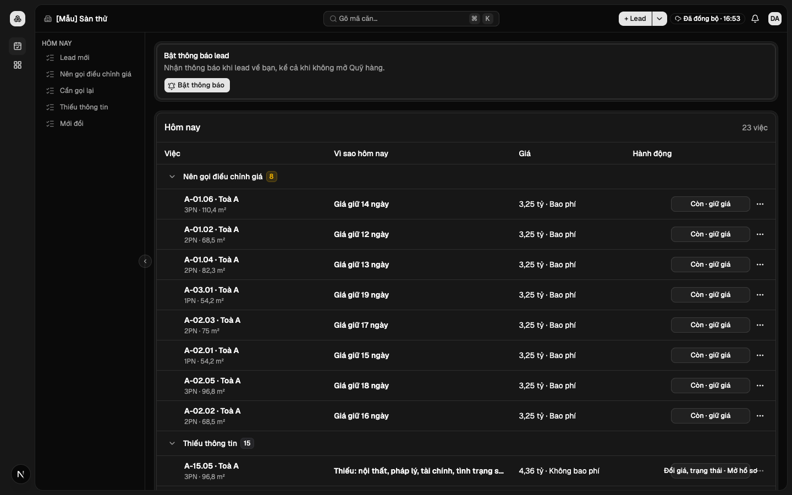
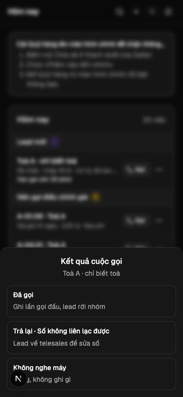

Đầu chủ mở Hôm nay trên điện thoại, gọi lại một chạm và ghi kết quả bằng một tay
Vì sao làm
Màn P1 (M1) Số đo hai tuần thử gần nhất (Tham chiếu §11): Tỉ lệ thao tác trên máy tính / điện thoại theo vai; tỉ lệ căn xác nhận trong N ngày — ngưỡng số đặt trước khi thử.
Đã hứa
- AC-1 — Given đầu chủ mở `/today`, When màn rộng dưới 768 px, Then vùng đầu chủ dựng danh sách thẻ, không dựng lưới; cùng
- AC-2 — Given danh sách thẻ, When một việc hiện, Then thẻ có hai tầng: trên là tên căn (hay tên lead), dưới là lý do ·
- AC-3 — Given một thẻ, When đầu chủ nhìn mép phải, Then có đúng một nút việc và một nút ⋯; ⋯ mở ngăn đáy kể đủ việc còn
- AC-4 — Given dòng có số gọi được (lead của mình, căn mình giữ), When đầu chủ chạm «Gọi», Then một chạm ấy gọi máy chủ mở
- AC-5 — Given vừa chạm «Gọi», When đầu chủ quay lại app — kể cả khi trang đã ẩn rồi hiện lại hay tải lại — Then ngăn
- AC-6 — Given máy mất mạng, When đầu chủ mở Hôm nay, Then thẻ vẫn hiện từ máy; «Gọi» tắt kèm lời «Cần mạng để mở số»;
- AC-7 — Given Hôm nay trên điện thoại, When đang tải, trống hay lỗi, Then hiện khung chờ hai tầng, trạng thái trống có
- AC-8 — Given đầu chủ mẫu trên điện thoại 375×812, When mở Hôm nay, chạm «Gọi» ở một lead mẫu rồi chọn «Đã gọi», và chạm
Thiết kế
_acceptance/hom-nay-dau-chu-dien-thoai/design.md
Quyết định
- 2026-11-05 · Máy · approach · S1 — Đã tra tri thức: Đầu chủ mở Hôm nay trên điện thoại, gọi lại một chạm và ghi kết quả bằng một tayKho đã khai tri_thuc — bước thiết kế tra trang trước khi chọn.
- 2026-11-05 · Máy · approach · S1 — Bản điện thoại dựng thẻ hai tầng solution-agents-2, cùng nhóm và cùng bộ việc với máy tính, một nút mép phải, ⋯ mở ngăn đáy NganNoi.Khối đích đã ký cho hàng 39 ở docs/design/vo-va-ia.md §2.
- 2026-11-05 · Máy · descope · S1 — KHÔNG làm chế độ cuộc gọi trên điện thoại (K1–K4: hạ giá bằng phím, ba lối «Đã cọc / bán…»); kết quả trên điện thoại là các việc một chạm của nhóm, hạ giá và đổi trạng thái đi qua hồ sơ căn.Tham chiếu xếp K1–K4 là dự phòng P2; bản mang theo chỉ giữ kết quả gọi một chạm.
- 2026-11-05 · Máy · approach · S1 — Kết quả một chạm trên dòng căn là «Còn · giữ giá» như hàng 22; trên dòng lead là «Đã gọi», «Trả lại» theo nhóm.Hàng 22 đã chốt kết quả gọi một chạm trên dòng căn; bản điện thoại cùng nút với máy tính.
- 2026-11-05 · Máy · approach · S1 — Ngăn «Kết quả cuộc gọi» mở ngay trong lần chạm «Gọi», trước khi mở tel:, để còn đó khi đầu chủ quay lại app.Web không đọc được trạng thái cuộc gọi của máy; chờ sự kiện quay lại trang không tin được trên app cài vào màn hình chính.
- 2026-11-05 · Máy · approach · S1 — «Gọi» mở số qua lối mở số sẵn có của máy chủ (lead: …/leads/{id}/phone-reveal; căn: …/listings/{id}/owner/phone-reveal), mỗi chạm một sự kiện; căn không do mình giữ không có «Gọi».Luật 32: số chủ chỉ của căn mình giữ; mở số là sự kiện ở máy chủ (owners/routes.ts «Mở số chủ — mỗi lần là một sự kiện»).
- 2026-11-05 · Máy · approach · S1 — Hỏi-1: nút mép phải trên điện thoại là «Gọi» cho dòng mà việc là gọi (lead chưa gọi lần đầu, căn nhóm nên gọi điều chỉnh giá hay cần gọi lại) khi có số gọi được; dòng khác giữ nút máy tính.Câu giao đòi gọi lại một chạm, còn khối đích đòi cùng nút với máy tính — hai câu đã ký kéo hai hướng.
- 2026-11-05 · Máy · descope · S1 — bỏ design-pass — khối đích đã ký ở vo-va-ia.md §2 cho hàng 39; ảnh màn thật 375 và 1440 chụp ở lượt chấm (E8).Màn điện thoại dựng theo khối đích có sẵn, không nhóm màn mới.
- 2026-11-05 · Máy · descope · S1 — bỏ coverage-scan — trục đã liệt kê thẳng ở Coverage theo bảng việc của hàng 22; đổi lại không có bằng chứng độ phủ từ quét hình thái.Không gian là bảng nút đã có (viec-dong.ts) nhân khổ và mạng, không phải bài toán liệt kê mở.
- 2026-11-05 · Máy · approach · S1 — Nút mép phải trên điện thoại là «Gọi» (một chạm) cho dòng mà việc là gọi — lead chưa gọi lần đầu, căn nhóm nên gọi điều chỉnh giá hay cần gọi lại — khi có số gọi được; dòng khác giữ nút máy tính (giám sát trả H-23).Câu giao của hàng 39 đòi gọi lại một chạm; khối đích giữ cùng nút cho mọi dòng không phải việc gọi.
- 2026-11-05 · Máy · approach · S1 — Hỏi-1: ngăn «Kết quả cuộc gọi» mở ngay trong lần chạm «Gọi» và giữ qua lần trang ẩn, hiện lại hay tải lại (nhớ trên máy theo dòng), thay vì chỉ mở khi trang hiện lại sau cuộc gọi.Web không biết cuộc gọi đã xong; hai lối đều đọc được nhưng giá khác nhau với người dùng (phản biện context sạch P0).
- 2026-11-05 · Máy · approach · S1 — «Gọi» mở số qua lối mở số sẵn có của máy chủ (lead: …/leads/{id}/phone-reveal; căn: …/listings/{id}/owner/phone-reveal); căn không do mình giữ không có «Gọi».Luật 32: số chủ chỉ của căn mình giữ.
- 2026-11-05 · Máy · approach · S1 — Như máy tính, mỗi dòng mở số một lần trong phiên trang; chạm «Gọi» lại cùng dòng dùng lại số đã mở (chỉ trong bộ nhớ), không mở số mới.Máy tính mở số một lần rồi nút thành gọi điện (today/hom-nay-dau-chu.tsx dòng 174); hai thiết bị ghi vết mở số như nhau.
- 2026-11-05 · Người · seal · gate1 —
- 2026-11-05 · Máy · fix · S3 — Trên điện thoại «Mở số» của lead không đứng riêng: «Gọi» mở số rồi gọi trong một chạm thay nó; dòng chạm của hai ngăn đáy là Item viền vai nút (không đổi chiều cao Button).Hai việc cùng mở số trên một thẻ là trùng; Button cao nhất 36 px, luật giao diện cấm đổi chiều cao thành phần, Item hai tầng chữ cao từ 48 px (AC-5).
- 2026-11-05 · Máy · fix · S4-r1 — Sửa sản phẩm: khoá gọi theo dòng — trong lúc máy chủ chưa trả số, chạm «Gọi» lần nữa ở cùng dòng bị bỏ qua và nút tắt; sửa thước: chiều đỏ của E4 chạy qua bộ so dùng chung với bản thật, thêm ca chạm hai lần.Lượt chấm 1 nêu lỗi trong hợp đồng AC-4: chạm hai lần trước khi số về mở số hai lần (danh-sach.tsx); chiều đỏ E4 cũ tự so trên chính bản sao nên luôn xanh.
- 2026-11-05 · Máy · fix · S4-r2 — Chủ kho chọn «Đổi khuôn đo, lượt 3»: mọi chạm của thẻ và hai ngăn đi qua hàm thuần (bamViec, chonKetQua, dungNhomThe) và bài kiểm gọi thật các hàm đó với ma trận viết trước và chiều đỏ; sửa sản phẩm: «Trả lại» trên điện thoại hỏi lại kèm lý do như máy tính; trống của Hôm nay dời sang today/mobile/het-viec.tsx để dựng thật trong bài kiểm.Lượt chấm 2 (REJECT): «Trả lại» trả lead không hỏi (AC-5); bốn bài đo đọc chữ thay vì hành vi (AC-1, AC-5, AC-6, AC-7) — cùng lớp lỗi với lượt 1 nên máy dừng, chủ kho chọn đổi khuôn.
Bằng chứng
Các eval
| Eval | Tiêu chí | Loại | Verdict | run_id | verified_at |
|---|---|---|---|---|---|
| E1 | AC-1 | test | PASS | minted-hom-nay-dau-chu-dien-thoai-E1-r3 | 2026-11-05T11:12:31Z |
| E2 | AC-2 | test | PASS | minted-hom-nay-dau-chu-dien-thoai-E2-r3 | 2026-11-05T11:12:31Z |
| E3 | AC-3 | test | PASS | minted-hom-nay-dau-chu-dien-thoai-E3-r3 | 2026-11-05T11:12:31Z |
| E4 | AC-4 | test | PASS | minted-hom-nay-dau-chu-dien-thoai-E4-r3 | 2026-11-05T11:12:31Z |
| E5 | AC-5 | test | PASS | minted-hom-nay-dau-chu-dien-thoai-E5-r3 | 2026-11-05T11:12:31Z |
| E6 | AC-6 | test | PASS | minted-hom-nay-dau-chu-dien-thoai-E6-r3 | 2026-11-05T11:12:31Z |
| E7 | AC-7 | test | PASS | minted-hom-nay-dau-chu-dien-thoai-E7-r3 | 2026-11-05T11:12:31Z |
| E8 | AC-8 | ui-check | PASS | minted-hom-nay-dau-chu-dien-thoai-E8-r3 | 2026-11-05T11:12:31Z |
| E9 | AC-1 | script | PASS | minted-hom-nay-dau-chu-dien-thoai-E9-r3 | 2026-11-05T11:12:31Z |
Chi tiết từng eval
PASS E1 · test
AC-1: Given đầu chủ mở `/today`, When màn rộng dưới 768 px, Then vùng đầu chủ dựng danh sách thẻ, không dựng lưới; cùng
lệnh: npm test -w @quy-hang/web ℹ duration_ms 2769.849541
PASS E2 · test
AC-2: Given danh sách thẻ, When một việc hiện, Then thẻ có hai tầng: trên là tên căn (hay tên lead), dưới là lý do ·
lệnh: npm test -w @quy-hang/web ℹ duration_ms 2769.849541
PASS E3 · test
AC-3: Given một thẻ, When đầu chủ nhìn mép phải, Then có đúng một nút việc và một nút ⋯; ⋯ mở ngăn đáy kể đủ việc còn
lệnh: npm test -w @quy-hang/web ℹ duration_ms 2769.849541
PASS E4 · test
AC-4: Given dòng có số gọi được (lead của mình, căn mình giữ), When đầu chủ chạm «Gọi», Then một chạm ấy gọi máy chủ mở
lệnh: npm test -w @quy-hang/web ℹ duration_ms 2769.849541
PASS E5 · test
AC-5: Given vừa chạm «Gọi», When đầu chủ quay lại app — kể cả khi trang đã ẩn rồi hiện lại hay tải lại — Then ngăn
lệnh: npm test -w @quy-hang/web ℹ duration_ms 2769.849541
PASS E6 · test
AC-6: Given máy mất mạng, When đầu chủ mở Hôm nay, Then thẻ vẫn hiện từ máy; «Gọi» tắt kèm lời «Cần mạng để mở số»;
lệnh: npm test -w @quy-hang/web ℹ duration_ms 2769.849541
PASS E7 · test
AC-7: Given Hôm nay trên điện thoại, When đang tải, trống hay lỗi, Then hiện khung chờ hai tầng, trạng thái trống có
lệnh: npm test -w @quy-hang/web ℹ duration_ms 2769.849541
PASS E8 · ui-check
AC-8: Given đầu chủ mẫu trên điện thoại 375×812, When mở Hôm nay, chạm «Gọi» ở một lead mẫu rồi chọn «Đã gọi», và chạm







PASS E9 · script
AC-1: Given đầu chủ mở `/today`, When màn rộng dưới 768 px, Then vùng đầu chủ dựng danh sách thẻ, không dựng lưới; cùng
8 tệp giao diện ngoài bản đồ
Eval không phân biệt (Analyst)
Vòng verify
- Round 1: lượt chấm đầu, quay lại triển khai — chạm «Gọi» hai lần chỉ được mở số một lần (sửa S4-r1).
- Round 2: REJECT — «Trả lại» phải hỏi lại như máy tính, mọi chạm phải đi qua hàm thuần và bài đo gọi thật (sửa S4-r2).
- Round 3: REJECT — bài đo E1 (rẽ khổ) đo hàm không nối vào màn, E5/E6 đo hàm giả thay cho cách nối thật; xem review-findings.md.
Tài nguyên
| Khối | Tác tử | Token đầu ra |
|---|---|---|
| S4 round 3 | 19 | 46.822 |
1 lượt chấm · tổng 46.822 token
Giới hạn và ngoài hợp đồng
- Chế độ cuộc gọi trên điện thoại (K1–K4: hạ giá bằng phím, ba lối «Đã cọc / bán…» trong một màn): P2 dự phòng theo Tham chiếu; hạ giá, đổi trạng thái đi qua hồ sơ căn trên điện thoại (hàng 33).
- Hôm nay của trưởng nhóm, telesales, đầu khách trên điện thoại: hàng khác.
- Biết cuộc gọi đã xong để tự mở ngăn: web không đọc được trạng thái cuộc gọi; ngăn mở ngay khi chạm «Gọi».
- Kéo để làm mới, vuốt thẻ để làm việc: không có ở khối đích.
- Lối «Ghi cuộc gọi» sang chế độ cuộc gọi của máy tính: trên điện thoại vào ⋯ như cũ, không đổi.
Giao
chưa ghi quan sát production
Giá trị
- Câu hỏi phép đo trả lời: [đề xuất] đã đạt «Đầu chủ mở Hôm nay trên điện thoại, gọi lại một chạm và ghi kết quả bằng một tay» chưa? — chưa đo
- Kết quả nào là SỐNG: [đề xuất] Đầu chủ mở Hôm nay trên điện thoại, gọi lại một chạm và ghi kết quả bằng một tay — chưa đo
- Kết quả nào là CHẾT: [đề xuất] chưa đạt «Đầu chủ mở Hôm nay trên điện thoại, gọi lại một chạm và ghi kết quả bằng một tay» khi hết timebox — chưa đo
- Timebox: … — chưa đo